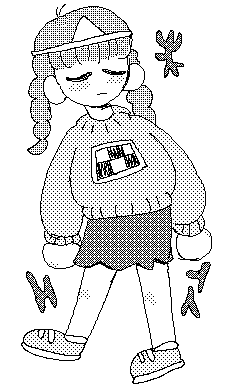

#ABOUT ME
Hi, I’m a multimedia artist located in the US. I love experimental art and creating things. I also love horror games, spicy noodles, and fish trivia. Feel free to reach out about any of these topics; I love email!
I made this site both to host my creative projects and also to function as its own creative project. I’m still learning, so expect the site to change over time. You can find the Github repo here.
#INTERESTS
ANIME:
SERIES
Sailor Moon
Azumanga Daioh
Lucky Star
Serial Experiments Lain
Revolutionary Girl Utena
Yu Yu Hakusho
Mob Psycho 100
One Punch Man
MOVIES
Perfect Blue
Akira
Angel’s Egg
Spirited Away
Princess Mononoke
Ghost in the Shell
VIDEO GAMES:
HORROR
Yume Nikki (& fangames)
Silent Hill
Ib
The Cat Lady
Forest of Drizzling Rain
Angels of Death
The Path
RPGS
Tomba! 2
Stardew Valley
Animal Crossing
Pokemon
BOOKS:
Check out the library for more!
FICTION
The Vegetarian - Han Kang
Beloved - Toni Morrison
Água Viva - Clarice Lispector
Pachinko - Min Jin Lee
NONFICTION
Understanding Power - Noam Chomsky
The Body in Pain: the making and unmaking of the world - Elaine Scarry
HOBBIES:
Front end development
Digital illustration
Resin art
Polymer clay art
Fishkeeping
Knitting
Cooking
3D printing & digfab
Writing
MUSIC:
ENGLISH
Cibo Matto
Japanese Breakfast
Magdalena Bay
Ethel Cain
Mitski
Fiona Apple
Kero Kero Bonito
JAPANESE
Soutaiseiriron (相対性理論)
DAOKO (だをこ)
TK from 凛として時雨
Moe and Ghosts
KOREAN
Taemin
LOONA (이달의 소녀)
WJSN (우주소녀)
Clazziquai Project (클래지콰이)
Dareharu (달의하루)
SHOWS:
Mr. Robot
Hannibal
Killing Eve
Grey’s Anatomy :(
MOVIES:
The Handmaiden
But I’m a Cheerleader
Heathers
Battle Royale
#PERSONALITY QUIZZES
| you are seagreen #2E8B57 |
| Your dominant hues are cyan and green. Although you definitely strive to be logical you care about people and know there’s a time and place for thinking emotionally. Your head rules most things but your heart rules others, and getting them to meet in the middle takes a lot of your energy some days. Your saturation level is higher than average - You know what you want, but sometimes know not to tell everyone. You value accomplishments and know you can get the job done, so don’t be afraid to run out and make things happen. Your outlook on life can be bright or dark, depending on the situation. You are flexible and see things objectively. |
| the spacefem.com html color quiz |


Which Hatsune Miku Nendoroid Model Are You?
Hosted By theOtaku.com: Anime

What Type Of Dere Are You?
Hosted By theOtaku.com: Anime
What is says about you: You are a contemplative person. You appreciate quiet moments. People depend on you to make them feel secure.
Find the colors of your rainbow at spacefem.com.

Which Puyo Puyo Character Are You?
Hosted By theOtaku.com: Anime

What Tokyo Mew Mew Character Are You?
Hosted By theOtaku.com: Anime

Which Madoka Magica Girl Are You?
Hosted By theOtaku.com: Anime

Which Rainbow Brite kid are you? By  Growing.
Growing.

What Lucky Star Character Are You?
Hosted By theOtaku.com: Anime

{kind=link}
{kind=link}
{kind=link}
{kind=link}
{kind=link}
{kind=link}
{kind=link}
{kind=link}
{kind=link}
{kind=link}
{kind=link}
{kind=link}